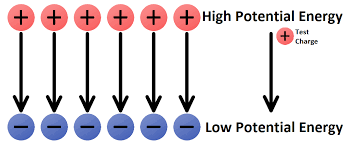

Electric potential energy is the energy stored in a system of charges due to their positions relative to each other. It represents the work done to assemble the charge configuration and is a fundamental concept in electrostatics.
What is Electric Potential Energy?
$$U = k\frac{q_1 q_2}{r}$$
What does zero electric potential energy mean?
The value "zero" for electric potential energy (EPE) is always relative—it depends on where you choose your reference point and the sign of the charges involved. For two charges, we usually define EPE = 0 when they are infinitely far apart. But:
For like charges (both positive or both negative), EPE is positive when they are close, and zero means they are infinitely far apart (no interaction).
For unlike charges (one positive, one negative), EPE is negative when they are close, and zero still means infinitely far apart—but in this case, "zero" can mean the system has released a lot of energy as the charges came together.
Bottom line: Zero EPE can mean "no energy stored" or "all the energy has been released," depending on the sign and arrangement of the charges. Always pay attention to the context and the sign!
Electric potential energy is the work required to bring charges from infinity to their current positions. It depends on the charges involved and their separation distance.
U: Electric potential energy (J)
k: Coulomb's constant = 8.99 × 10⁹ N⋅m²/C²
q₁, q₂: Charges (C)
r: Distance between charges (m)

Work is done to bring charges together, storing potential energy.
Relationship to Work
Work-Energy Principle
The electric potential energy equals the work done by an external force to assemble the charge configuration:
$$W = \Delta U = U_f - U_i$$
When charges are moved by an external force:
Positive work: External force does work on the system (energy increases)
Negative work: Electric force does work (energy decreases)
Zero work: Charges move perpendicular to field lines
Sign of Electric Potential Energy
Energy Sign Rules
Positive energy: Like charges (repulsion) - work needed to bring them together
Negative energy: Unlike charges (attraction) - work is released when they come together
Answer: -6.0 × 10⁻³ J (negative work means the electric force does the work).
Example 3: Three Charge System
Problem: Three charges are placed at the corners of an equilateral triangle: +2.0 μC at each corner. The side length is 1.0 m. Find the total electric potential energy.